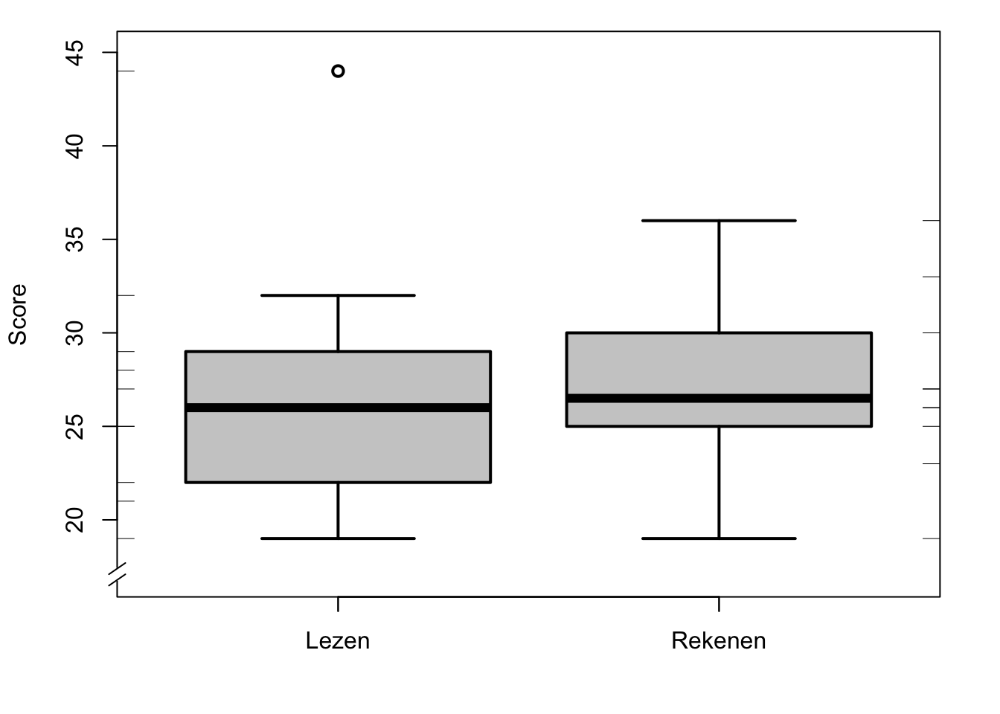

Hoofdstuk 9 Centrum en spreiding
9.1 Inleiding
In het vorige hoofdstuk hebben we geleerd om observaties te tellen en te classificeren. Daarmee kunnen we de observaties van een variabele samenvatten, bijvoorbeeld in een tabel, een frequentieverdeling, of in een histogram. Vaak kunnen we de observaties nog verder samenvatten, in kenmerken die aangeven op welke wijze de observaties verdeeld zijn. In dit hoofdstuk maken we kennis met een aantal van dergelijke kenmerken. Sommige van die kenmerken zijn van toepassing op variabelen van alle meetniveau’s (bv. modus), andere alleen op variabelen van interval- of ratio-niveau (bv. gemiddelde). Na een inleiding over het gebruik van symbolen bespreken we eerst hoe we het centrum van een verdeling kunnen beschrijven, en hoe we de spreiding kunnen beschrijven.
9.2 Symbolen
In de beschrijvende statistiek wordt veel gewerkt met symbolen. Die symbolen zijn verkorte aanduidingen voor een reeks van handelingen. Sommige van die symbolen zijn je reeds bekend: de exponent \({}^2\) in de uitdrukking \(x^2\) is een symbool met de betekenis “vermenigvuldig \(x\) met zichzelf”, ofwel \(x^2 = x \times x\) (waarin ook \(\times\) weer een symbool is).
Vaak wordt een hoofdletter gebruikt om een variabele aan te duiden (\(X\)), en een kleine letter om een afzonderlijke score van die variabele aan te duiden (\(x\)). Als we de afzonderlijke scores willen onderscheiden, dan doen we dat met een subscript index: \(x_1\) is de eerste observatie, \(x_2\) is de tweede observatie, enz. Op deze manier geeft \(x_i\) de \(i\)’de score aan, of de score van proefpersoon nummer \(i\), van variabele \(X\). Als we willen generaliseren over alle scores, dan kunnen we de index weglaten, maar we kunnen ook een punt gebruiken als “lege” index: in de uitdrukking \(x_.\) staat de punt-index voor iedere willekeurige index.
Het aantal observaties in een bepaalde groep geven we aan met kleine letter \(n\), en het totaal aantal observaties van een variabele met de hoofdletter \(N\). Als er maar één groep is, zoals in de voorbeelden in dit hoofdstuk, dan geldt dat \(n=N\).
In de beschrijvende statistiek wordt veel opgeteld, en daarvoor is dan ook een apart symbool, \(\sum\), de griekse hoofdletter Sigma, waarmee een sommering of optelling wordt aangeduid. We zouden kunnen zeggen “tel alle geobserveerde waarden van variabele \(X\) bij elkaar op”, maar dat doen we doorgaans korter: \[\sum\limits_{i=1}^n x_i, \textrm{of korter} \sum x % \Sigma_i^N x_i, \textrm{of nog korter} \Sigma X\] Op deze wijze wordt aangegeven dat alle scores \(x_i\) bij elkaar moeten worden opgeteld (gesommeerd), voor alle waarden van \(i\) (vanaf \(i=1\), tenzij anders aangegeven) tot \(i=n\). Alle \(n\) scores van de variabele \(x\) moeten dus worden opgeteld.
Als er haakjes gebruikt worden, let dan goed op: handelingen beschreven binnen een paar haakjes hebben voorrang, die moet je dus eerst uitvoeren. Ook als dat niet strikt nodig is, zullen we vaak haakjes gebruiken ter verduidelijking, zoals in \((2\times3)+4=10\).
9.3 Centrummaten
9.3.1 gemiddelde
De meest bekende maat voor het centrum van een verdeling is wel het gemiddelde. Het gemiddelde is eenvoudig uit te rekenen door alle scores bij elkaar op te tellen, en vervolgens die som weer te delen door het aantal observaties. In symbolen: \[\begin{equation} \overline{x} = \frac{\sum x}{n} = \frac{1}{n} \sum\limits_{i}^n x_i \tag{9.1} \end{equation}\]
We maken hier meteen kennis met een nieuw symbool, \(\overline{x}\), vaak “x-bar” genoemd, waarmee het gemiddelde van \(x\) wordt aangeduid. Het gemiddelde wordt ook vaak aangeduid met het symbool \(M\) (Eng. mean), o.a. in artikelen in de APA-stijl.
Voorbeeld 9.1: In een winkel wordt bijgehouden hoe lang klanten moeten wachten bij de kassa, voordat ze aan de beurt zijn. Voor \(N=10\) klanten worden de volgende wachttijden geobserveerd, in minuten:
1, 2, 5, 2, 2, 2, 3, 1, 1, 3.
De gemiddelde wachttijd is \((\sum X)/N = 22/10 = 2.2\) minuten.
Het gemiddelde van \(X\) wordt meestal uitgedrukt met één decimaalcijfer meer dan de scores van \(X\) (zie ook §9.6.1 hieronder over het aantal decimaalcijfers waarmee het gemiddelde wordt weergegeven).
Het gemiddelde is op te vatten als het “balanspunt” van een verdeling: de observaties aan weerszijden houden elkaar “in evenwicht”, zoals geïllustreerd in Figuur 9.1, waar de “blokken” van het histogram precies “in evenwicht” zijn op het “balanspunt” bij het gemiddelde van 2.2. Het gemiddelde is ook de waarde ten opzichte waarvan de \(N\) observaties tezamen het minste verschillen, en het vormt dus een goed kenmerk voor het centrum van een kansverdeling.
Het gemiddelde is alleen bruikbaar bij variabelen van het interval- of ratio-meetniveau.
Figuur 9.1: Histogram van N=10 wachttijden, met markering van het gemiddelde.
9.3.2 mediaan
De mediaan (symbool \(Md\) of \(\tilde{x}\)) is de observatie in het midden van de rangorde van observaties.10 Als we de scores van \(X\) rangschikken van klein naar groot, dan is de mediaan het middenpunt van die gerangschikte reeks. De helft van de observaties is kleiner dan de mediaan, en de andere helft is groter dan de mediaan.
Bij een oneven aantal observaties is de middelste observatie de mediaan. Bij een even aantal observaties wordt de mediaan gevormd door het gemiddelde van de middelste twee observaties.
Voorbeeld 9.2: De wachttijden uit Voorbeeld 9.1 worden als volgt gerangschikt:
1, 1, 1, 2, 2, 2, 2, 3, 3, 5.
De mediaan is het gemiddelde van de middelste twee (cursieve) observaties, dus 2 minuten.
De mediaan is minder gevoelig dan het gemiddelde voor extreme waarden van \(x\). In het bovenstaande voorbeeld is de extreme wachttijd van 5 minuten van aanzienlijke invloed op het gemiddelde. Als we die waarde zouden verwijderen, dan verandert het gemiddelde van 2.2 naar 1.9, maar de mediaan blijft nog steeds 2. Extreme waarden hebben dus een minder grote invloed op de mediaan dan op het gemiddelde. Pas als de rangschikking van de observaties verandert, kan ook de mediaan veranderen.
De mediaan is bruikbaar bij variabelen van het ordinale, interval- of ratio-meetniveau.
9.3.3 modus
De modus (bijv.nw. ‘modaal’) is de waarde of score van \(X\) die het meeste voorkomt.
Voorbeeld 9.3: Bij de wachttijden uit Voorbeeld 9.1 komt de score 2 het meeste voor (\(4\times\)); dit is de modus.
Voorbeeld 9.4: In 2014 was het gemiddelde inkomen per huishouden in Nederland €34200. Het modale inkomen (per huishouden) lag tussen €18000 en €2000011. In 2014 vielen de meeste huishoudens in Nederland dus in deze inkomens-klasse.
De modus is nog minder gevoelig dan de mediaan voor extreme waarden van \(x\). In het bovenstaande voorbeeld 9.2 maakt het niet uit wat de waarde van de langste wachttijd is: ook al zou die observatie de waarde \(10\) of \(1000\) hebben, de modus blijft onveranderlijk \(2\) (ga dat zelf na).
De modus is bruikbaar bij variabelen van alle meetniveau’s.
9.3.4 harmonisch gemiddelde
Als de afhankelijke variabele een breuk of verhouding of ratio voorstelt, zoals de snelheid waarmee een taak verricht wordt, dan vormt het (rekenkundig) gemiddelde van formule (9.1) eigenlijk niet een goede aanduiding voor de meest kenmerkende of centrale waarde. In dat geval kan je beter het harmonisch gemiddelde gebruiken:
\[\begin{equation} H = \frac{1}{\frac{1}{n} \sum\limits_{i}^n \frac{1}{x_i} } = \frac{n}{\sum\limits_{i}^n \frac{1}{x_i}} \tag{9.2} \end{equation}\]
Voorbeeld 9.5: Een student schrijft \(n=3\) teksten. Over de eerste tekst (500 woorden) doet hij 2.5 uur, over de tweede tekst (1000 woorden) doet hij 4 uur, en over de derde tekst (300 woorden) doet hij 0.6 uur. Wat is de gemiddelde schrijfsnelheid van deze student? De schrijfsnelheden zijn resp. 200, 250, en 500 woorden per uur, en het “normale” (rekenkundig) gemiddelde daarvan is 317 woorden per uur. Het “eigenlijke” gemiddelde is echter \((500+1000+300)/(2.5+4+0.6)\) \(=1800/7.1=254\) woorden per uur. De hoge schrijfsnelheid van de korte tekst telt voor \(1/n\) deel mee in het rekenkundig gemiddelde, hoewel die tekst slechts \(300/1800=1/6\) van het totaal aantal woorden bevat.
Omdat de afhankelijke variabele een breuk is (snelheid, woorden/uur), vormt het harmonische gemiddelde hier een betere centrummaat. Eerst rekenen we de snelheid (woorden per tijdseenheid) om naar de inverse daarvan (zie (9.2), in noemer, binnen somteken), d.w.z. naar tijd per woord: 0.005, 0.004, en 0.002 (tijdseenheden per woord, zie voetnoot12). Ten tweede middelen we deze tijden, tot gemiddeld 0.00366 uur per woord, en tenslotte nemen we daarvan wederom de inverse. De harmonisch gemiddelde schrijfsnelheid is dan \(1/0.00366=273\) woorden per uur, dichter bij het “eigenlijke” gemiddelde van 254 woorden per uur.
9.3.5 gewinsoriseerde gemiddelde
De grote gevoeligheid van het gewone (rekenkundige) gemiddelde voor uitbijters kan ingeperkt worden, door de meest extreme observaties te wijzigen naar de minder extreme, meer centrale observaties. Het gemiddelde van deze (deels gewijzigde) observaties wordt het gewinsoriseerde gemiddelde genoemd (“winsorized mean”; ).
Voorbeeld 9.6: De wachttijden uit Voorbeeld 9.1 worden als volgt gerangschikt:
1, 1, 1, 2, 2, 2, 2, 3, 3, 5.
Voor het 10% gewinsoriseerde gemiddelde worden (na rangordening) de 10% kleinste observaties gelijk gesteld aan de eerstvolgende grotere waarde, en de 10% grootste observaties worden gelijk gesteld aan de laatst voorafgaande kleinere waarde (gewijzigde waarden zijn hier cursief):
1, 1, 1, 2, 2, 2, 2, 3, 3, 3.
Het winsorized gemiddelde over deze gewijzigde waarden is \(\overline{x}_w=2\) minuten.
9.3.6 getrimde gemiddelde
Een nog drastischer ingreep is om de meest extreme observaties geheel te verwijderen. Het gemiddelde van de overblijvende observaties wordt het getrimde gemiddelde genoemd (“trimmed mean”). Bij een 10% trim verwijderen we de onderste 10% en de bovenste 10% van de observaties; er resteren dan dus nog slechts \((1- (2 \times (10/100))\times n\) observaties (Wilcox 2012).
Voorbeeld 9.7: De wachttijden uit Voorbeeld 9.1 worden weer als volgt gerangschikt:
1, 1, 1, 2, 2, 2, 2, 3, 3, 5.
Voor het 10% getrimde gemiddelde worden (na rangordening) de 10% kleinste observaties verwijderd, en de 10% grootste observaties worden eveneens verwijderd:
1, 1, 2, 2, 2, 2, 3, 3.
Het getrimde gemiddelde over deze \(10-(.2)(10)=8\) resterende waarden is hier \(\overline{x}_t=2\) minuten.
9.3.7 vergelijking van centrummaten
Figuur 9.2 illustreert de verschillen tussen de diverse centrummaten, voor asymmetrisch verdeelde observaties.

Figuur 9.2: Histogram van een variabele met positief scheve (asymmetrische) frequentieverdeling, met daarin aangegeven (1) de mediaan, (2) het 10% getrimde gemiddelde, (3) het 10% gewinsoriseerde gemiddelde, en (4) het rekenkundig gemiddelde. De geobserveerde scores zijn gemarkeerd langs de horizontale as.
Het rekenkundig gemiddelde is het meest gevoelig voor extreme waarden: de extreme waarden “trekken” erg hard aan het gemiddelde. Deze invloed van extreme waarden wordt getemperd in het gewinsoriseerde gemiddelde, en wordt nog meer getemperd in het getrimde gemiddelde. Naarmate de trimfactor (het percentage van de observaties dat wordt gewijzigd of verwijderd) toeneemt, gaan de gewinsoriseerde en getrimde gemiddelden meer lijken op de mediaan. Immers, bij een trimfactor van 50% resteert er van alle observaties nog maar één (ongewijzigde) observatie, en dat is de mediaan (ga dat zelf na). In §9.7 gaan we verder in op de keuze voor een passende maat voor het centrum van een verdeling.
9.4 Kwartielen en boxplots
De verdeling van een variabele wordt niet alleen gekenmerkt door het centrum van die verdeling, maar ook door de mate van spreiding rondom het centrum, d.w.z. hoe groot het verschil is van de observaties t.o.v. het gemiddelde. We willen bijvoorbeeld niet alleen weten wat het gemiddelde inkomen is, maar ook hoe groot de verschillen in inkomen zijn.
9.4.1 Kwartielen
Een eenvoudige en bruikbare maat daarvoor zijn de kwartielen (Tukey 1977). We delen de gerangschikte observaties in twee helften op; de grens daartussen is de mediaan. Vervolgens halveren we weer elke helft, tot kwarten. De kwartielen worden gevormd door de grenzen tussen deze kwarten; er zijn dus drie kwartielen. Het eerste kwartiel \(Q_1\) is de mediaan van de onderste helft, \(Q_2\) is de mediaan van alle \(n\) observaties, en het derde kwartiel \(Q_3\) is de mediaan van de bovenste helft. De helft van de observaties (nl. het tweede en derde kwart) ligt tussen \(Q_1\) en \(Q_3\). De afstand tussen \(Q_1\) en \(Q_3\) wordt de “interquartile range” genoemd (IQR). Deze IQR vormt een eerste bruikbare maat voor de spreiding van observaties ten opzichte van hun centrale waarde.
Voor de uitleg maken we gebruik van de fictieve scores op een leestoets, gegeven in Tabel 9.1.
| Leerling | Lezen | Rekenen | Wereldoriëntatie |
|---|---|---|---|
| 1 | 18 | 22 | 55 |
| 2 | 32 | 36 | 55 |
| 3 | 45 | 34 | 38 |
| 4 | 25 | 25 | 40 |
| 5 | 27 | 29 | 48 |
| 6 | 23 | 20 | 44 |
| 7 | 29 | 27 | 49 |
| 8 | 26 | 25 | 42 |
| 9 | 20 | 25 | 57 |
| 10 | 25 | 27 | 47 |
| \(\sum x\) | 270 | 270 | 475 |
| \(\overline{x}\) | 27.0 | 27.0 | 47.5 |
Voorbeeld 9.8: De scores bij het onderdeel Lezen in Tabel 9.1 zijn als volgt gerangschikt:
18, 20, 23, 25, 25, 26, 27, 29, 32, 45.
De mediaan is \(Q_2=25.5\) (tussen de 5e en 6e observatie in deze ranglijst). De mediaan van de onderste helft is \(Q_1=23\) en die van de bovenste helft is \(Q_3=29\). De interquartile range is \(\textrm{IQR}=29-23=6\).
9.4.2 Uitbijters
In de leesscores in Tabel 9.1 treffen we een extreme waarde aan, nl. de score 45, die opvallend veel verschilt van het gemiddelde. Zo’n opvallende waarde wordt aangeduid als een “uitbijter” (in het Engels als “outlier”). De grens voor wat we beschouwen als een uitbijter ligt doorgaans bij \(1.5 \times \textrm{IQR}\). Als een waarde meer dan \(1.5 \times \textrm{IQR}\) boven \(Q_3\) of onder \(Q_1\) ligt, dan beschouwen we die observatie als een uitbijter. Controleer deze observaties nog eens (denk aan het principe van zorgvuldigheid, zie §3.1).
Voorbeeld 9.9: Voor de eerder genoemde leesscores in Tabel 9.1 vonden we \(Q_1=23\), \(Q_3=29\), en \(\textrm{IQR}=Q_3-Q_1=29-23=6\). De bovenste grenswaarde voor uitbijters is \(Q_3 + 1.5 \times \textrm{IQR} = 29 + 1.5 \times 6 = 29+9 = 38\). De observatie met score 45 ligt boven deze grenswaarde, en wordt daarom beschouwd als uitbijter.
9.4.3 Boxplots
De frequentieverdeling van een variabele kunnen we nu weergeven met vijf kenmerken, de zgn. “five-number summary”, nl. de kleinste waarde, \(Q_1\), mediaan, \(Q_3\), en grootste waarde. Deze vijf kenmerken worden grafisch weergegeven in een zgn. “boxplot”, zie Figuur 9.3 voor een voorbeeld (Tukey 1977, sec. 2C).

Figuur 9.3: Boxplots van scores van \(N=10\) leerlingen op de onderdelen Lezen en Rekenen van de CITO-toets (zie Tabel 9.1), met uitbijters als open cirkels gemarkeerd. De geobserveerde scores zijn gemarkeerd langs de verticale assen.
De box omspant het gebied van (bij benadering) \(Q_1\) tot \(Q_3\), en omspant dus de centrale helft van de observaties. De dikkere lijn in de box markeert de mediaan. De lijnen strekken zich uit naar de kleinste en grootste waarden die géén uitbijters zijn.13 De afzonderlijke uitbijters worden hier met een apart symbool aangeduid.
9.5 Spreidingsmaten
9.5.1 variantie
Een andere manier om de spreiding van de observaties aan te geven, zou zijn om te kijken naar de afwijking van iedere observatie ten opzichte van het gemiddelde, dus \((x_i-\overline{x})\). Maar als we al die afwijkingen optellen, dan is de som daarvan altijd nul! De positieve en negatieve afwijkingen heffen elkaar immers op (ga dat zelf na in Tabel @#ref(tab:cito)). Daarom middelen we niet de afwijkingen zelf, maar de kwadraten van die afwijkingen. Zowel de positieve als de negatieve afwijkingen resulteren in positieve gekwadrateerde-afwijkingen. Van al die gekwadrateerde-afwijkingen berekenen we het gemiddelde, d.w.z. we tellen ze op en delen door \((n-1)\), zie voetnoot14. Het resultaat noemen we de variantie, aangeduid met symbool \(s^2\): \[\begin{equation} s^2 = \frac{ \sum (x_i - \overline{x})^2 } {n-1} \tag{9.3} \end{equation}\]
De teller van deze breuk wordt wel aangeduid als de “sum of squared deviations” of “sum of squares” (SS) en de noemer wordt wel aangeduid als het aantal vrijheidsgraden of “degrees of freedom” van de teller (d.f.; zie §13.2.1).
De variantie rekenen we tegenwoordig altijd uit met een rekenmachine of computer.
9.5.2 standaarddeviatie
Om de bovenstaande variantie te berekenen, hebben we de afwijkingen van de observaties gekwadrateerd. De variantie is dus een grootheid die niet wordt uitgedrukt in de oorspronkelijke eenheden (bijv. seconden, cm, score), maar in gekwadrateerde eenheden (bijv. \(\textrm{s}^2\), \(\textrm{cm}^2\), \(\textrm{score}^2\)). Teneinde weer terug te keren naar de oorspronkelijke eenheden, nemen we de wortel uit de variantie. Het resultaat noemen we de standaarddeviatie, aangeduid met symbool \(s\):
\[\begin{equation} s = \sqrt{s^2} = \sqrt{ \frac{ \sum (x_i - \overline{x})^2 } {n-1} } \tag{9.4} \end{equation}\]
Voorbeeld 9.10: Het gemiddelde van de eerder genoemde leesscores in Tabel 9.1 is \(27.0\), en de afwijkingen zijn als volgt:
-9, 5, 18, -2, 0, -4, 2, -1, -7, -2.
De gekwadrateerde afwijkingen zijn 81, 25, 324, 4, 0, 16, 4, 1, 49, 4.
De som van deze gekwadrateerde afwijkingen is 508, en de variantie is dan \(s^2=508/9=56.44\). De standaarddeviatie is de wortel van de variantie, dus \(s=\sqrt{508/9}=7.5\).
De variantie en standaarddeviatie zijn alleen bruikbaar bij variabelen van het interval- of ratio-meetniveau. Ook de variantie en standaarddeviatie kunnen weer gebaseerd zijn op de gewinsoriseerde of getrimde verzameling van observaties.
De standaarddeviatie hebben we nodig (a) als we de ruwe observaties willen omzetten naar standaardscores (zie §9.8 hieronder), (b) als we een variabele willen beschrijven die normaal verdeeld is (zie §10.3, en (c) als we hypotheses willen toetsen met behulp van een normaal verdeelde variabele (zie §@ref(sec:ttoets.onesample) e.v.).
9.5.3 MAD
Behalve de standaarddeviatie is er ook een robuuste tegenhanger daarvan, die niet gebruik maakt van het gemiddelde. Deze maat is daarom minder gevoelig voor uitbijters (robuuster), wat soms handig is.
We kijken hiervoor naar de afwijking van iedere observatie ten opzichte van de mediaan (niet t.o.v. het gemiddelde). Van deze afwijkingen nemen we de absolute waarde15 (niet het kwadraat). Van deze absolute afwijkingen bepalen we tenslotte weer de mediaan (niet het gemiddelde). Het resultaat noemen we de “median absolute deviation” (MAD): \[\begin{equation} \textrm{MAD} = k ~~ Md ( |x_i - Md(x) |) \tag{9.5} \end{equation}\]
Hierbij gebruiken we meestal \(k=1.4826\) als constante; door deze schaalfactor komt de MAD ruwweg overeen met de standaarddeviatie \(s\) indien \(x\) normaal verdeeld zou zijn (§10.3).
Voorbeeld 9.11: De mediaan van de eerder genoemde leesscores in Tabel 9.1 is 25.5, en de afwijkingen van die mediaan zijn als volgt:
-7.5, 6.5, 19.5, -0.5, 1.5, -2.5, 3.5, 0.5, -5.5, -0.5.
De gerangschikte, absolute afwijkingen zijn
0.5, 0.5, 0.5, 1.5, 2.5, 3.5, 5.5, 6.5, 7.5, 19.5.
De mediaan van deze 10 absolute afwijkingen is 3, en \(\textrm{MAD} = 1.4826 \times 3 = 4.4478\). Merk op dat de MAD kleiner is dan de standaarddeviatie, o.a. omdat de MAD minder gevoelig is voor de extreme waarde \(x_3=45\).
9.6 Over significante cijfers
9.6.1 Gemiddelde en standaarddeviatie
Een gemiddelde uitkomst wordt weergegeven in een beperkt aantal significante cijfers, d.i. een beperkt aantal cijfers, van links naar rechts geteld, zonder acht te slaan op het decimaalteken. Het aantal significante cijfers van een gemiddelde uitkomst moet gelijk zijn aan het aantal significante cijfers van het aantal observaties waarover is gemiddeld. (Overige cijfers in de gemiddelde uitkomst zijn niet nauwkeurig bepaald.) De gemiddelde uitkomst moet eerst afgerond worden tot het gepaste aantal significante cijfers, voordat de uitkomst verder geïnterpreteerd wordt, zie Tabel 9.2.
| aant.obs. | aant.signif.cijfers | voorbeeld gemiddelde | rapporteer als |
|---|---|---|---|
| \(1\dots9\) | 1 | 21/8 = 2.625 | 3 |
| \(10\dots99\) | 2 | 57/21 = 2.714286 | 2.7 |
| \(100\dots999\) | 3 | 317/120 = 2.641667 | 2.64 |
| \(1000\dots9999\) | 4 | 3179/1234 = 2.576175 | 2.576 |
Het aantal significante cijfers in de gerapporteerde standaarddeviatie is hetzelfde als in het gemiddelde, volgens Tabel 9.2.
9.6.1.1 Achtergrond
Laten we aannemen dat ik de afstand van mijn huis naar mijn werk langs een vaste route een aantal keren heb gemeten. Het gemiddelde van die metingen bedraagt zogenaamd \(2.954321\) km. Door het gemiddelde te rapporteren met 7 cijfers suggereer ik hier dat ik precies weet dat de afstand \(2954321\) millimeter is, en ten hoogste \(1\) mm meer of minder: het laatste cijfer is geschat of afgerond. Het aantal significante cijfers (in dit voorbeeld 7) geeft de mate van nauwkeurigheid aan. In dit voorbeeld is de gesuggereerde nauwkeurigheid van 1 mm duidelijk onjuist, o.a. omdat beginpunt en eindpunt niet tot op de millimeter bepaald zijn. Het is daarom gebruikelijk om de gemiddelde gemeten afstand te rapporteren met een aantal significante cijfers dat de nauwkeurigheid van die metingen en van het gemiddelde aangeeft, bijv. \(3.0\) km (per auto of fiets) of \(2.95\) km (te voet).
Dezelfde gedachtengang is van toepassing bij de meting van een kenmerk door middel van een enquête-vraag. Met \(n=15\) respondenten zou de gemiddelde score \(43/15 \approx 2.86667\) kunnen zijn. Maar de nauwkeurigheid is in dit voorbeeld niet zo goed als dit decimale getal suggereert. In feite zorgt hier één afwijkend antwoord al voor een afwijking van \(\pm0.06667\) in het gemiddelde. Bovendien is een gemiddelde score altijd het resultaat van een deling, en “(bij) delen en vermenigvuldigen geldt de regel dat de uitkomst evenveel significante cijfers bevat als de meetwaarde met het kleinste aantal significante cijfers.”16 In dit voorbeeld bestaan de teller (\(43\)) en de noemer (\(15\)) van het gemiddelde beide uit 2 significante cijfers, en dient de uitkomst dus ook uit 2 significante cijfers te bestaan. De gemiddelde score dient gerapporteerd te worden als \(2.9\) punten, met slechts één cijfer achter het decimaalteken.
9.6.2 Percentages
Een percentage is een verhouding of breuk, vermenigvuldigd met \(100\). Gebruik en rapporteer een afgerond percentage (d.i. twee significante cijfers) alleen indien de noemer van de verhouding of breuk groter is dan 100. Deze noemer geeft het aantal waarnemingen of gevallen. Als de noemer kleiner is dan 100 (waarnemingen, gevallen), dan zijn percentages misleidend, zie Tabel 9.3.
| aant.obs.(noemer) | aant.signif.cijfers | voorbeeld breuk | rapporteer als |
|---|---|---|---|
| \(1\dots9\) | 1 | 3/8 = 0.4 | 3/8 |
| \(10\dots99\) | 2 | 21/57 = 0.36 | 21/57 |
| \(100\dots999\) | 3 | 120/317 = 0.378 | 38% |
| \(1000\dots9999\) | 4 | 1234/3179 = 0.3882 | 38.8% |
9.6.2.1 Achtergrond
De regels voor percentages vloeien voort uit die in §9.6.1 toegepast op delingen. Als de noemer groter is dan 100 is het percentage (met twee significante cijfers) het gevolg van een schaalverandering “naar beneden” (van een noemer groter dan 100 naar een noemer van precies 100 percentagepunten). De percentageschaal is minder nauwkeurig dan de oorspronkelijke verhouding; de percentages zijn afgerond tot op twee significante cijfers; het laatste significante cijfer van het percentage is dus geborgd.
Als de noemer echter kleiner is dan 100 dan is het percentage (met twee significante cijfers) het gevolg van een “oprekking naar boven” (van een noemer kleiner dan 100 naar een noemer van precies 100 percentagepunten). De percentageschaal suggereert dan een pseudo-nauwkeurigheid die er niet was in de oorspronkelijke verhouding, en de nauwkeurigheid van de percentageschaal is vals. Als de noemer kleiner is dan 100, zijn percentages dus misleidend.
Voorbeeld 9.12: In een cursus van 29 studenten zijn er 23 studenten geslaagd. We spreken dan vaak van een cursusrendement van \(23/29=\) 79%. Toch is zo’n weergave als percentage in dit geval misleidend. Laten we daarvoor eens kijken naar de 6 gezakten. Je kunt beredeneren dat het aantal van 6 gezakten een eigen afrondingsfout heeft van \(1/2\) student; bij omzetting naar de percentageschaal wordt ook deze afrondingsfout mee vergroot, zodat de percentages minder nauwkeurig zijn dan de hele percentages (2 significante cijfers) suggereren. Of anders gezegd: het aantal van 6 gezakten (d.i. een getal met één significant cijfer) noopt ons om ook de verhouding weer te geven met slechts één significant cijfer, en dus niet als percentage. Rapporteer bij voorkeur de verhouding zelf (\(23/29\)), of eventueel de “odds” (\(23/6=4\)) afgerond tot het juiste aantal significante cijfers17.
Op grond van dezelfde overwegingen is een percentage met een decimaal cijfer (d.i. met drie significante cijfers, bv. “36.1%”) alleen zinnig als de noemer van de verhouding of breuk groter is dan 1000.
Voorbeeld 9.13: In 2013 startten 154 studenten met een tweejarige research master. Na 2 jaar waren 69 daarvan afgestudeerd. Het nominaal rendement voor dit cohort is dan \(69/154=\) 0.448052, af te ronden en te rapporteren als 44% (niet als 44.81%).
9.7 Keuzemoment
De verdeling van een variabele kun je op verschillende manieren beschrijven. Als variabele \(X\) gemeten is op het interval- of ratio-meetniveau, begin dan altijd met een histogram (§8.4) en een boxplot (§9.4.3).
De centrummaten en spreidingsmaten zijn te ordenen zoals in Tabel 9.4.
| Verdeling | Centrummaat | Spreidingsmaat |
|---|---|---|
| alle | mediaan | kwartielen, IQR, MAD |
| … | getrimde of gewins.gemidd. | getrimde of gewins.std.dev. |
| (a & b & c) | gemiddelde | standaarddeviatie |
De meest robuuste maten staan bovenin (mediaan, kwartielen, IQR, MAD). Deze maten zijn robuust: ze zijn weinig gevoelig voor uitbijters of voor eventuele asymmetrie in de frequentieverdeling, zoals de voorbeelden in dit hoofdstuk laten zien.
De meest efficiënte maten staan onderin in Tabel 9.4: gemiddelde en standaarddeviatie. Deze maten zijn efficiënt: ze geven het centrum en de spreiding het beste weer, ze hebben zelf de kleinste standaarddeviatie, en ze hebben daarvoor relatief het kleinste aantal observaties nodig. De andere maten nemen een tussenpositie in: de getrimde maten zijn wat robuuster, en de gewinsoriseerde maten wat efficiënter.
De meest efficiënte maten vereisen echter ook de meest vèrgaande assumpties (en de meest robuuste maten vereisen de minste assumpties). Deze efficiënte maten zijn alleen zinnig, indien de verdeling van \(X\) voldoet aan drie assumpties: (a) de verdeling is min of meer symmetrisch, d.w.z. de linker- en rechter-helft van het histogram resp. de bovenste en onderste helft van de boxplot lijken elkaars spiegelbeeld, (b) de verdeling is unimodaal, d.w.z. de verdeling heeft één modus, en (c) de verdeling bevat geen of nauwelijks uitbijters. Inspecteer deze assumpties in het histogram en de boxplot van \(X\). Als aan één van deze assumpties niet is voldaan, dan doe je er beter aan om meer robuuste maten te gebruiken om de verdeling te beschrijven.
9.8 Standaardscores
Soms kan het handig zijn om scores te vergelijken die gemeten zijn op verschillende schalen. Bijvoorbeeld: Jan had een 8 als eindcijfer voor wiskunde op het VWO, en zijn IQ is 136. Is de afwijking van Jan ten opzichte van het gemiddelde even groot op beide schalen? Om zo’n vraag te beantwoorden moeten we de scores van de twee variabelen uitdrukken op dezelfde meetschaal. Dat doen we door de ruwe scores om te rekenen naar standaard-scores, of z-scores. Hiervoor nemen we de afwijking van iedere score ten opzichte van het gemiddelde, en we delen die afwijking door de standaarddeviatie:
\[\begin{equation} z_i = \frac{(x_i-\overline{x})}{s_x} \tag{9.6} \end{equation}\]
De standaardscore of z-score representeert dus de afstand van de \(i\)’de observatie tot het gemiddelde van \(x\), uitgedrukt in eenheden standaarddeviatie. Bij een standaardscore van \(z=-1\) is de geobserveerde score precies \(1 \times s\) beneden het gemiddelde \(\overline{x}\). Bij een standaardscore van \(z=+2\) dan is de geobserveerde score precies \(2 \times s\) boven het gemiddelde18.
De z-scores zijn ook handig om twee variabelen te vergelijken die weliswaar op dezelfde schaal gemeten zijn (bijvoorbeeld een schaal van \(1 \dots 100\)), maar die toch verschillende gemiddelden en/of verschillende standaarddeviaties hebben, zoals de scores in Tabel 9.1. In Hoofdstuk 10 zullen we verder werken met z-scores.
De standaardscore of z-score heeft twee handige eigenschappen die je moet onthouden. Ten eerste is het gemiddelde altijd gelijk aan nul: \(\overline{z}=0\), en ten tweede is de standaarddeviatie gelijk aan 1: \(s_z = 1\). (Deze eigenschappen volgen uit de definitie in formule (9.6); het wiskundige bewijs laten we hier achterwege.) Dus de transformatie van een verzameling observaties naar standaardscores of z-scores levert altijd een verdeling op met een gemiddelde van nul en een standaarddeviatie van één. Bedenk wel dat deze transformatie naar standaardscores alleen zinnig is, indien en voor zover het gemiddelde en de standaarddeviatie ook zinnige maten zijn om de verdeling van \(x\) te beschrijven (zie §9.7).
9.9 SPSS
Voor histogram, percentielen en boxplot:
Analyze > Descriptive Statistics > Explore...Selecteer variabele (sleep naar Variable(s) paneel)
Kies Plots, vink aan: Histogram, en bevestig met Continue
Kies Options, vink aan: Percentiles, en bevestig met Continue en
daarna met OK.
De uitvoer bevat zowel beschrijvende statistiek als histogram en
boxplot.
Voor kenmerkende getallen:
Analyze > Descriptive Statistics > Descriptives...Selecteer variabele (sleep naar Variable(s) paneel)
Kies Options; vink aan:
Mean, Sum, Std.deviation, Variance, Minimum, Maximum, en bevestig met
Continue en daarna met OK.
De uitvoer bevat de gevraagde statistische kenmerken van de verdeling
van de variabele.
Voor mediaan:
Analyze > Compare Means > Means...Selecteer variabele (sleep naar Variable(s) paneel)
Kies Options; vink aan:
Mean, Number of cases, Standard deviation, Variance, Minimum, Maximum
en ook Median, en bevestig met Continue en daarna met OK.
De uitvoer bevat de gevraagde statistische kenmerken van de verdeling
van de variabele.
Standaardscores uitrekenen en bewaren in nieuwe kolom:
Analyze > Descriptive Statistics > Descriptives...Selecteer variabele (sleep naar Variable(s) paneel)
Vink aan: Save standardized values as variables en bevestig met OK.
De nieuwe variabele(n) met z-scores worden toegevoegd als nieuwe
kolom(men) aan het databestand.
9.10 R
Voor kwartielen en boxplot zoals Figuur 9.3 gebruiken we de commando’s fivenum, quantile, en boxplot:
require(foreign) # for foreign::read.spss
cito <- read.spss("data/cito.sav")
fivenum(cito$Lezen) # minimum, Q1, mediaan, Q3, maximum## [1] 19 22 26 29 44quantile(cito$Lezen, c( 1/4, 3/4 ) ) # Q1 en Q3, anders berekend## 25% 75%
## 22.75 28.75op <- par(mar=c(4,4,1,2)+0.1) # smaller margins
with(cito,
boxplot(Lezen, Rekenen, col="grey80", lwd=2, lty=1, ylab="Score", ylim=c(17,45) )
)
axis(side=1, at=c(1,2), labels=c("Lezen","Rekenen") )
plotrix::axis.break(axis=2) # break in linker Y-as
rug(cito$Lezen, side=2) # markeringen linker Y-as
rug(cito$Rekenen, side=4) # markeringen rechter Y-as
Veel centrummaten zijn als functie in R voorgeprogrammeerd:
mean(cito$Lezen) # gemiddelde## [1] 27.2psych::winsor.mean(cito$Lezen, trim=.1) # gewinsoriseerde gemiddelde, uit psych package## [1] 26.3mean(cito$Lezen, trim=.1) # getrimde gemiddelde## [1] 26.125median(cito$Lezen) # mediaan## [1] 26Ook diverse spreidingsmaten zijn voorgeprogrammeerd:
var(cito$Lezen) # variantie## [1] 50.17778sd(cito$Lezen) # standaarddeviatie, sd(x) = sqrt(var(x))## [1] 7.083627mad(cito$Lezen) # MAD## [1] 5.1891Daarentegen moeten we standaardscores zelf uitrekenen, en zelf bewaren als nieuwe variabele, hier zLezen genoemd (let op de haakjes in de eerste regel):
zLezen <- (cito$Lezen-mean(cito$Lezen)) / sd(cito$Lezen) # z-scores
head(zLezen) # eerste paar observaties van variabele zLezen## [1] -1.1575990 0.6776189 2.3716662 -0.3105753 0.1129365 -0.7340872Referenties
Tukey, John W. 1977. Exploratory Data Analysis. Reading, MA: Addison-Wesley.
Wilcox, Rand R. 2012. Introduction to Robust Estimation and Hypothesis Testing. 3rd ed. Burlington: Elsevier.
In het Engels wordt de streep in het midden van een weg aangeduid als de “median”; deze streep verdeelt de weg in twee even brede helften.↩︎
http://www.cbs.nl/nl-NL/menu/themas/inkomen-bestedingen/cijfers/extra/inkomensverdeling.htm↩︎
Dit is vergelijkbaar met sporten als roeien, zwemmen, wielrennen, schaatsen, e.d., waar ook de tijd over een afgesproken afstand gemeten en vergeleken wordt, en niet de snelheid over een afgesproken tijd.↩︎
In een klassieke boxplot strekken de lijnen zich uit naar het minimum en maximum (Tukey 1977) en worden uitbijters niet apart aangeduid.↩︎
We delen door \(n-1\) en niet door \(n\), om een betere schatting te krijgen van de spreiding in de populatie. Op deze manier houden we rekening met het feit dat we één kenmerk van de steekproef (nl. het gemiddelde) gebruiken om de spreiding te bepalen. Als je alleen geïnteresseerd bent in de spreiding in je steekproef van observaties, en niet in de populatie, deel dan door \(n\).↩︎
Positieve afwijkingen blijven ongewijzigd, van negatieve afwijkingen wordt het teken omgekeerd.↩︎
Deze “odds” geeft aan dat er 23 geslaagden zijn op 6 gezakten, d.i. afgerond 4 geslaagden voor iedere gezakte.↩︎
Check: \(z = +2 = \frac{(x_i-\overline{x})}{s_x}\), dus \(2 s = (x_i-\overline{x})\), dus \(x_i = \overline{x}+2s\).↩︎